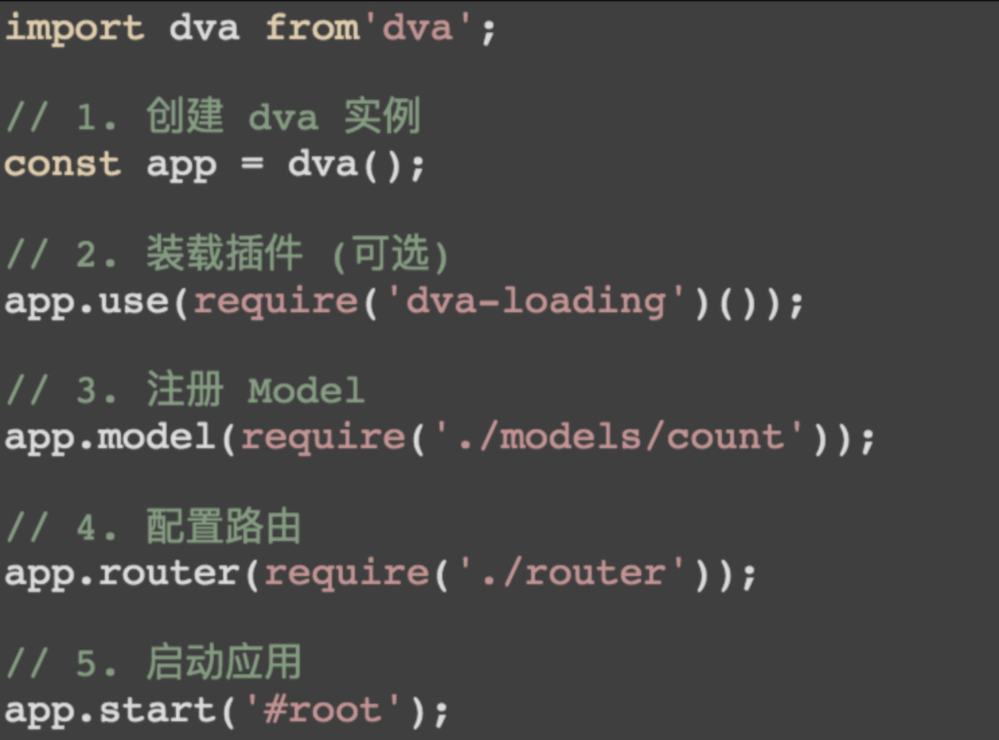
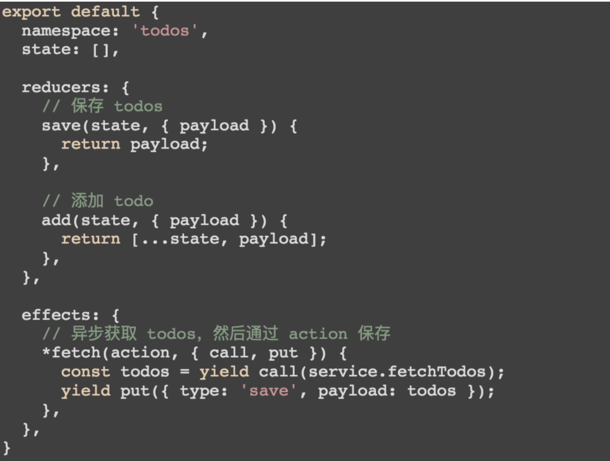
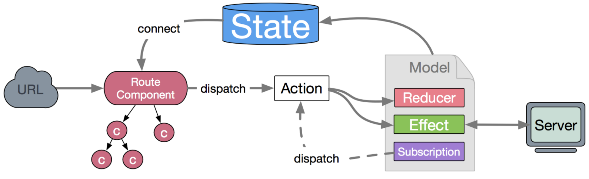
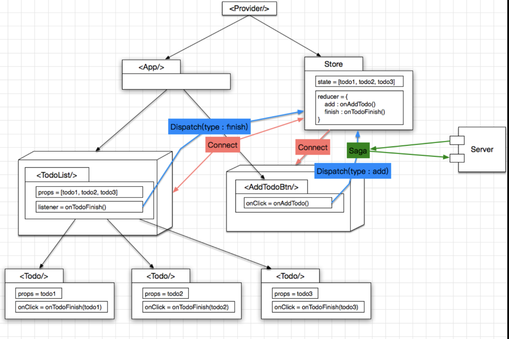
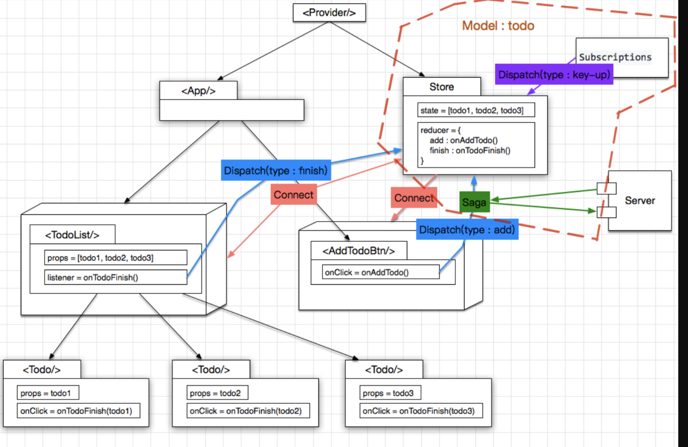

# 一、环境搭建
$ npm install dva-cli -g
# 创建应用
$ dva new dva-quickstart
# 启动
$ npm start
react项目的推荐目录结构（如果使用dva脚手架创建，则自动生成如下）
|── /mock/ # 数据mock的接口文件
|── /src/ # 项目源码目录（我们开发的主要工作区域）
| |── /components/ # 项目组件（用于路由组件内引用的可复用组件）
| |── /routes/ # 路由组件（页面维度）
| | |── route1.js
| | |── route2.js # 根据router.js中的映射，在不同的url下，挂载不同的路由组件
| | └── route3.js
| |── /models/ # 数据模型（可以理解为store，用于存储数据与方法）
| | |── model1.js
| | |── model2.js # 选择分离为多个model模型，是根据业务实体进行划分
| | └── model3.js
| |── /services/ # 数据接口（处理前台页面的ajax请求，转发到后台）
| |── /utils/ # 工具函数（工具库，存储通用函数与配置参数）
| |── router.js # 路由配置（定义路由与对应的路由组件）
| |── index.js # 入口文件
| |── index.less
| └── index.html
|── package.json # 项目信息
└── proxy.config.js # 数据mock配置
使用 antd
npm i babel-plugin-import --save
babel-plugin-import是用来按需加载antd的脚本和样式的
- 编辑
.webpackrc，使babel-plugin-import插件生效
{
+ "extraBabelPlugins": [
+ ["import", { "libraryName": "antd", "libraryDirectory": "es", "style": "css" }]
+ ]
}
# 二、初识Dva
# 2.1 Dva的特性
dva = React-Router + Redux + Redux-saga
- 仅有 5 个
API，仅有5个主要的api - 支持
HMR，支持模块的热更新 - 支持
SSR (ServerSideRender)，支持服务器端渲染 - 支持
Mobile/ReactNative，支持移动手机端的代码编写 - 支持
TypeScript - 支持路由和
Model的动态加载
# 2.2 Dva的五个API

# 2.2.1 app = dva(Opts)
app = dva(Opts)：创建应用，返回dva实例。(注：dva 支持多实例)**
在opts可以配置所有的hooks
const app = dva({
history,
initialState,
onError,
onAction,
onStateChange,
onReducer,
onEffect,
onHmr,
extraReducers,
extraEnhancers,
});
hooks包含如下配置项
1、 onError((err, dispatch) => {})
effect执行错误或subscription通过done主动抛错时触发，可用于管理全局出错状态- 注意：
subscription并没有加try...catch，所以有错误时需通过第二个参数done主动抛错
app.model({
subscriptions: {
setup({ dispatch }, done) {
done(e)
},
},
})
2、 onAction(fn | fn[])
在
action被dispatch时触发，用于注册redux中间件。支持函数或函数数组格式
- 例如我们要通过
redux-logger打印日志
import createLogger from 'redux-logger';
const app = dva({
onAction: createLogger(opts),
})
3、 onStateChange(fn)
state改变时触发，可用于同步 state 到localStorage，服务器端等
4、 onReducer(fn)
封装
reducer执行，比如借助redux-undo实现redo/undo
import undoable from 'redux-undo';
const app = dva({
onReducer: reducer => {
return (state, action) => {
const undoOpts = {};
const newState = undoable(reducer, undoOpts)(state, action);
// 由于 dva 同步了 routing 数据，所以需要把这部分还原
return { ...newState, routing: newState.present.routing };
},
},
})
5、 onEffect(fn)
封装
effect执行。比如dva-loading基于此实现了自动处理loading状态
6、 onHmr(fn)
热替换相关，目前用于
babel-plugin-dva-hmr
7、 extraReducers
指定额外的
reducer，比如redux-form需要指定额外的form reducer
import { reducer as formReducer } from 'redux-form'
const app = dva({
extraReducers: {
form: formReducer,
},
})
这里比较常用的是，
history的配置，一般默认的是hashHistory，如果要配置history为browserHistory，可以这样
import createHistory from 'history/createBrowserHistory';
const app = dva({
history: createHistory(),
});
initialState`：指定初始数据，优先级高于 `model` 中的 `state`，默认是 `{}`，但是基本上都在`modal`里面设置相应的`state
# 2.2.2 app.use(Hooks)
app.use(Hooks)：配置 hooks 或者注册插件
这里最常见的就是dva-loading插件的配置
import createLoading from 'dva-loading';
...
app.use(createLoading(opts));
但是一般对于全局的
loading我们会根据业务的不同来显示相应不同的loading图标，我们可以根据自己的需要来选择注册相应的插件
# 2.2.3 app.model(ModelObject)
app.model(ModelObject)：这个是你数据逻辑处理，数据流动的地方

# 2.2.4 app.unmodel(namespace)
取消
model注册，清理reducers,effects和subscriptions。subscription如果没有返回unlisten函数，使用app.unmodel会给予警告
# 2.2.5 app.router(Function)
注册路由表，这一操作步骤在dva中也很重要
// 注册路由
app.router(require('./router'))
// 路由文件
import { Router, Route } from 'dva/router';
import IndexPage from './routes/IndexPage'
import TodoList from './routes/TodoList'
function RouterConfig({ history }) {
return (
<Router history={history}>
<Route path="/" component={IndexPage} />
<Route path='/todoList' components={TodoList}/>
</Router>
)
}
export default RouterConfig
如果我们想解决组件动态加载问题，我们的路由文件也可以按照下面的写法来写
import { Router, Switch, Route } from 'dva/router'
import dynamic from 'dva/dynamic'
function RouterConfig({ history, app }) {
const IndexPage = dynamic({
app,
component: () => import('./routes/IndexPage'),
})
const Users = dynamic({
app,
models: () => [import('./models/users')],
component: () => import('./routes/Users'),
})
return (
<Router history={history}>
<Switch>
<Route exact path="/" component={IndexPage} />
<Route exact path="/users" component={Users} />
</Switch>
</Router>
)
}
export default RouterConfig
其中
dynamic(opts)中opt包含三个配置项：
app:dva实例，加载models时需要models: 返回Promise数组的函数，Promise返回 dva model`component：返回Promise的函数，Promise返回React Component
# 2.2.6 app.start
启动应用，即将我们的应用跑起来
# 2.3 Dva九个概念
# 2.3.1 State
初始值，我们在
dva()初始化的时候和在 modal 里面的state对其两处进行定义，其中 modal 中的优先级低于传给dva()的opts.initialState
// dva()初始化
const app = dva({
initialState: { count: 1 },
});
// modal()定义事件
app.model({
namespace: 'count',
state: 0,
});
# 2.3.2 Action
表示操作事件，可以是同步，也可以是异步
action的格式如下，它需要有一个type，表示这个action要触发什么操作；payload则表示这个action将要传递的数据
{
type: String,
payload: data,
}
我们通过 dispatch 方法来发送一个 action
dispatch({ type: 'todos/add', payload: 'Learn Dva' });
其实我们可以构建一个Action 创建函数，如下
function addTodo(text) {
return {
type: ADD_TODO,
text
}
}
//我们直接dispatch(addTodo()),就发送了一个action。
dispatch(addTodo())
# 2.3.3 Model
model是dva中最重要的概念，Model非MVC中的M，而是领域模型，用于把数据相关的逻辑聚合到一起，几乎所有的数据，逻辑都在这边进行处理分发
import queryString from 'query-string'
import * as todoService from '../services/todo'
export default {
namespace: 'todo',
state: {
list: []
},
reducers: {
save(state, { payload: { list } }) {
return { ...state, list }
}
},
effects: {
*addTodo({ payload: value }, { call, put, select }) {
// 模拟网络请求
const data = yield call(todoService.query, value)
console.log(data)
let tempList = yield select(state => state.todo.list)
let list = []
list = list.concat(tempList)
const tempObj = {}
tempObj.title = value
tempObj.id = list.length
tempObj.finished = false
list.push(tempObj)
yield put({ type: 'save', payload: { list }})
},
*toggle({ payload: index }, { call, put, select }) {
// 模拟网络请求
const data = yield call(todoService.query, index)
let tempList = yield select(state => state.todo.list)
let list = []
list = list.concat(tempList)
let obj = list[index]
obj.finished = !obj.finished
yield put({ type: 'save', payload: { list } })
},
*delete({ payload: index }, { call, put, select }) {
const data = yield call(todoService.query, index)
let tempList = yield select(state => state.todo.list)
let list = []
list = list.concat(tempList)
list.splice(index, 1)
yield put({ type: 'save', payload: { list } })
},
*modify({ payload: { value, index } }, { call, put, select }) {
const data = yield call(todoService.query, value)
let tempList = yield select(state => state.todo.list)
let list = []
list = list.concat(tempList)
let obj = list[index]
obj.title = value
yield put({ type: 'save', payload: { list } })
}
},
subscriptions: {
setup({ dispatch, history }) {
// 监听路由的变化，请求页面数据
return history.listen(({ pathname, search }) => {
const query = queryString.parse(search)
let list = []
if (pathname === 'todoList') {
dispatch({ type: 'save', payload: {list} })
}
})
}
}
}
model对象中包含5个重要的属性
state
这里的 state 跟我们刚刚讲的 state 的概念是一样的，只不过她的优先级比初始化的低，但是基本上项目中的 state 都是在这里定义的
namespace
model` 的命名空间，同时也是他在全局 `state` 上的属性，只能用字符串，我们发送在发送 `action` 到相应的 `reducer` 时，就会需要用到 `namespace
Reducer
以
key/value格式定义reducer，用于处理同步操作，唯一可以修改state的地方。由action触发。其实一个纯函数
namespace: 'todo',
state: {
list: []
},
// reducers 写法
reducers: {
save(state, { payload: { list } }) {
return { ...state, list }
}
}
Effect
用于处理异步操作和业务逻辑，不直接修改
state，简单的来说，就是获取从服务端获取数据，并且发起一个action交给reducer的地方
其中它用到了redux-saga，里面有几个常用的函数。
// effects 写法
effects: {
*addTodo({ payload: value }, { call, put, select }) {
// 模拟网络请求
const data = yield call(todoService.query, value)
console.log(data)
let tempList = yield select(state => state.todo.list)
let list = []
list = list.concat(tempList)
const tempObj = {}
tempObj.title = value
tempObj.id = list.length
tempObj.finished = false
list.push(tempObj)
yield put({ type: 'save', payload: { list }})
},
*toggle({ payload: index }, { call, put, select }) {
// 模拟网络请求
const data = yield call(todoService.query, index)
let tempList = yield select(state => state.todo.list)
let list = []
list = list.concat(tempList)
let obj = list[index]
obj.finished = !obj.finished
yield put({ type: 'save', payload: { list } })
},
*delete({ payload: index }, { call, put, select }) {
const data = yield call(todoService.query, index)
let tempList = yield select(state => state.todo.list)
let list = []
list = list.concat(tempList)
list.splice(index, 1)
yield put({ type: 'save', payload: { list } })
},
*modify({ payload: { value, index } }, { call, put, select }) {
const data = yield call(todoService.query, value)
let tempList = yield select(state => state.todo.list)
let list = []
list = list.concat(tempList)
let obj = list[index]
obj.title = value
yield put({ type: 'save', payload: { list } })
}
}

在项目中最主要的会用到的是
put与call
Subscription
- 以
key/value格式定义subscription，subscription是订阅，用于订阅一个数据源，然后根据需要 dispatch 相应的 actionsubscription是订阅，用于订阅一个数据源，然后根据需要dispatch相应的action。在app.start()时被执行，数据源可以是当前的时间、当前页面的url、服务器的websocket连接、history路由变化等等。
- 注意：如果要使用
app.unmodel()，subscription必须返回unlisten方法，用于取消数据订阅
// subscriptions 写法
subscriptions: {
setup({ dispatch, history }) {
// 监听路由的变化，请求页面数据
return history.listen(({ pathname, search }) => {
const query = queryString.parse(search)
let list = []
if (pathname === 'todoList') {
dispatch({ type: 'save', payload: {list} })
}
})
}
}
# 2.3.4 Router
Router` 表示路由配置信息，项目中的 `router.js
export default function({ history }){
return(
<Router history={history}>
<Route path="/" component={App} />
</Router>
);
}
RouteComponent
RouteComponent表示Router里匹配路径的Component，通常会绑定model的数据。如下:
import { connect } from 'dva';
function App() {
return <div>App</div>;
}
function mapStateToProps(state) {
return { todos: state.todos };
}
export default connect(mapStateToProps)(App);
# 2.4 整体架构

- 首先我们根据
url访问相关的Route-Component，在组件中我们通过dispatch发送action到model里面的effect或者直接Reducer - 当我们将
action发送给Effect，基本上是取服务器上面请求数据的，服务器返回数据之后，effect会发送相应的action给reducer，由唯一能改变state的reducer改变state，然后通过connect重新渲染组件。 - 当我们将
action发送给reducer，那直接由reducer改变state，然后通过connect重新渲染组件
# 2.5 Dva图解
图解一：加入Saga
React` 只负责页面渲染, 而不负责页面逻辑, 页面逻辑可以从中单独抽取出来, 变成 `store

使用
Middleware拦截action, 这样一来异步的网络操作也就很方便了, 做成一个Middleware就行了, 这里使用redux-saga这个类库
- 点击创建
Todo的按钮, 发起一个type == addTodo的action saga拦截这个action, 发起http请求, 如果请求成功, 则继续向reducer发一个type == addTodoSucc的action, 提示创建成功, 反之则发送type == addTodoFail的action即可
图解二：Dva表示法

dva做了 3 件很重要的事情
- 把
store及saga统一为一个model的概念, 写在一个 js 文件里面 - 增加了一个
Subscriptions, 用于收集其他来源的action, eg: 键盘操作 model写法很简约, 类似于DSL或者RoR
# 三、计数器例子
$ dva new myapp
目录结构介绍
.
├── mock // mock数据文件夹
├── node_modules // 第三方的依赖
├── public // 存放公共public文件的文件夹
├── src // 最重要的文件夹，编写代码都在这个文件夹下
│ ├── assets // 可以放图片等公共资源
│ ├── components // 就是react中的木偶组件
│ ├── models // dva最重要的文件夹，所有的数据交互及逻辑都写在这里
│ ├── routes // 就是react中的智能组件，不要被文件夹名字误导。
│ ├── services // 放请求借口方法的文件夹
│ ├── utils // 自己的工具方法可以放在这边
│ ├── index.css // 入口文件样式
│ ├── index.ejs // ejs模板引擎
│ ├── index.js // 入口文件
│ └── router.js // 项目的路由文件
├── .eslintrc // bower安装目录的配置
├── .editorconfig // 保证代码在不同编辑器可视化的工具
├── .gitignore // git上传时忽略的文件
├── .roadhogrc.js // 项目的配置文件，配置接口转发，css_module等都在这边。
├── .roadhogrc.mock.js // 项目的配置文件
└── package.json // 当前整一个项目的依赖
首先是前端的页面，我们使用 class 形式来创建组件，原例子中是使用无状态来创建的。react 创建组件的各种方式，大家可以看React创建组件的三种方式及其区别 (opens new window)
我们先修改
route/IndexPage.js
import React from 'react';
import { connect } from 'dva';
import styles from './IndexPage.css';
class IndexPage extends React.Component {
render() {
const { dispatch } = this.props;
return (
<div className={styles.normal}>
<div className={styles.record}>Highest Record: 1</div>
<div className={styles.current}>2</div>
<div className={styles.button}>
<button onClick={() => {}}>+</button>
</div>
</div>
);
}
}
export default connect()(IndexPage);
同时修改样式
routes/IndexPage.css
.normal {
width: 200px;
margin: 100px auto;
padding: 20px;
border: 1px solid #ccc;
box-shadow: 0 0 20px #ccc;
}
.record {
border-bottom: 1px solid #ccc;
padding-bottom: 8px;
color: #ccc;
}
.current {
text-align: center;
font-size: 40px;
padding: 40px 0;
}
.button {
text-align: center;
button {
width: 100px;
height: 40px;
background: #aaa;
color: #fff;
}
}
在
model处理state，在页面里面输出model中的state
- 首先我们在index.js中将
models/example.js，即将model下一行的的注释打开
import dva from 'dva';
import './index.css';
// 1. Initialize
const app = dva();
// 2. Plugins
// app.use({});
// 3. Model
app.model(require('./models/example')); // 打开注释
// 4. Router
app.router(require('./router'));
// 5. Start
app.start('#root');
接下来我们进入
models/example.js，将namespace名字改为count，state对象加上record与current属性。如下
export default {
namespace: 'count',
state: {
record: 0,
current: 0,
},
...
};
接着我们来到
routes/indexpage.js页面，通过的mapStateToProps引入相关的state
import React from 'react';
import { connect } from 'dva';
import styles from './IndexPage.css';
class IndexPage extends React.Component {
render() {
const { dispatch, count } = this.props;
return (
<div className={styles.normal}>
<div className={styles.record}>
Highest Record: {count.record} // 将count的record输出
</div>
<div className={styles.current}>
{count.current}
</div>
<div className={styles.button}>
<button onClick={() => {} } >
+
</button>
</div>
</div>
);
}
}
function mapStateToProps(state) {
return { count: state.count };
} // 获取state
export default connect(mapStateToProps)(IndexPage);
通过
+发送action，通过reducer改变相应的state
- 首先我们在
models/example.js，写相应的reducer
export default {
...
reducers: {
add1(state) {
const newCurrent = state.current + 1;
return { ...state,
record: newCurrent > state.record ? newCurrent : state.record,
current: newCurrent,
};
},
minus(state) {
return { ...state, current: state.current - 1 };
},
},
};
在页面的模板
routes/IndexPage.js中+号点击的时候，dispatch一个action
import React from 'react';
import { connect } from 'dva';
import styles from './IndexPage.css';
class IndexPage extends React.Component {
render() {
const { dispatch, count } = this.props;
return (
<div className={styles.normal}>
<div className={styles.record}>Highest Record: {count.record}</div>
<div className={styles.current}>{count.current}</div>
<div className={styles.button}>
<button
+ onClick={() => { dispatch({ type: 'count/add1' });}
}>+</button>
</div>
</div>
);
}
}
function mapStateToProps(state) {
return { count: state.count };
}
export default connect(mapStateToProps)(IndexPage);
接下来我们来使用
effect模拟一个数据接口请求，返回之后，通过yield put()改变相应的state
- 首先我们替换相应的
models/example.js的effect
effects: {
*add(action, { call, put }) {
yield call(delay, 1000);
yield put({ type: 'minus' });
},
},
这里的
delay，是我这边写的一个延时的函数，我们在utils里面编写一个utils.js，一般请求接口的函数都会写在servers文件夹中
export function delay(timeout) {
return new Promise((resolve) => {
setTimeout(resolve, timeout);
});
}
订阅订阅键盘事件，使用
subscriptions，当用户按住command+up时候触发添加数字的action
- 在
models/example.js中作如下修改
+import key from 'keymaster';
...
app.model({
namespace: 'count',
+ subscriptions: {
+ keyboardWatcher({ dispatch }) {
+ key('⌘+up, ctrl+up', () => { dispatch({type:'add'}) });
+ },
+ },
});
- 在这里你需要安装
keymaster这个依赖
npm install keymaster --save
- 现在你可以按住
command+up就可以使current加1
# 四、Dva实践
# 4.1 抽离Model
抽离
Model，根据设计页面需求，设计相应的Model
// models/users.js
// version1: 从数据维度抽取，更适用于无状态的数据
// version2: 从业务状态抽取，将数据与组件的业务状态统一抽离成一个model
// 新增部分为在数据维度基础上，改为从业务状态抽取而添加的代码
export default {
namespace: 'users',
state: {
list: [],
total: null,
+ loading: false, // 控制加载状态
+ current: null, // 当前分页信息
+ currentItem: {}, // 当前操作的用户对象
+ modalVisible: false, // 弹出窗的显示状态
+ modalType: 'create', // 弹出窗的类型（添加用户，编辑用户）
},
// 异步操作
effects: {
*query(){},
*create(){},
*'delete'(){}, // 因为delete是关键字，特殊处理
*update(){},
},
// 替换状态树
reducers: {
+ showLoading(){}, // 控制加载状态的 reducer
+ showModel(){}, // 控制 Model 显示状态的 reducer
+ hideModel(){},
querySuccess(){},
createSuccess(){},
deleteSuccess(){},
updateSuccess(){},
}
}
# 4.2 设计组件
先设置容器组件的访问路径，再创建组件文件
# 4.2.1 容器组件
具有监听数据行为的组件，职责是绑定相关联的 model 数据，包含子组件；传入的数据来源于model
import React, { Component, PropTypes } from 'react';
// dva 的 connect 方法可以将组件和数据关联在一起
import { connect } from 'dva';
// 组件本身
const MyComponent = (props)=>{};
// propTypes属性，用于限制props的传入数据类型
MyComponent.propTypes = {};
// 声明模型传递函数，用于建立组件和数据的映射关系
// 实际表示 将ModelA这一个数据模型，绑定到当前的组件中，则在当前组件中，随时可以取到ModelA的最新值
// 可以绑定多个Model
function mapStateToProps({ModelA}) {
return {ModelA};
}
// 关联 model
// 正式调用模型传递函数，完成模型绑定
export default connect(mapStateToProps)(MyComponent);
# 4.2.2 展示组件
展示通过
props传递到组件内部数据；传入的数据来源于容器组件向展示组件的props
import React, { Component, PropTypes } from 'react';
// 组件本身
// 所需要的数据通过 Container Component 通过 props 传递下来
const MyComponent = (props)=>{}
MyComponent.propTypes = {};
// 并不会监听数据
export default MyComponent;
# 4.2.3 设置路由
// .src/router.js
import React, { PropTypes } from 'react';
import { Router, Route } from 'dva/router';
import Users from './routes/Users';
export default function({ history }) {
return (
<Router history={history}>
<Route path="/users" component={Users} />
</Router>
);
};
容器组件雏形
// .src/routes/Users.jsx
import React, { PropTypes } from 'react';
function Users() {
return (
<div>User Router Component</div>
);
}
export default Users;
# 4.2.4 设计容器组件
自顶向下的设计方法：先设计容器组件，再逐步细化内部的展示容器
组件的定义方式
// 方法一： es6 的写法，当组件设计react生命周期时，可采用这种写法
// 具有生命周期的组件，可以在接收到传入数据变化时，自定义执行方法，有自己的行为模式
// 比如在组件生成后调用xx请求(componentDidMount)、可以自己决定要不要更新渲染(shouldComponentUpdate)等
class App extends React.Component({});
// 方法二： stateless 的写法，定义无状态组件
// 无状态组件，仅仅根据传入的数据更新，修改自己的渲染内容
const App = (props) => ({});
容器组件：
// ./src/routes/Users.jsx
import React, { Component, PropTypes } from 'react';
// 引入展示组件 （暂时都没实现）
import UserList from '../components/Users/UserList';
import UserSearch from '../components/Users/UserSearch';
import UserModal from '../components/Users/UserModal';
// 引入css样式表
import styles from './style.less'
function Users() {
// 向userListProps中传入静态数据
const userSearchProps = {};
const userListProps = {
total: 3,
current: 1,
loading: false,
dataSource: [
{
name: '张三',
age: 23,
address: '成都',
},
{
name: '李四',
age: 24,
address: '杭州',
},
{
name: '王五',
age: 25,
address: '上海',
},
],
};
const userModalProps = {};
return (
<div className={styles.normal}>
{/* 用户筛选搜索框 */}
<UserSearch {...userSearchProps} />
{/* 用户信息展示列表 */}
<UserList {...userListProps} />
{/* 添加用户 & 修改用户弹出的浮层 */}
<UserModal {...userModalProps} />
</div>
);
}
// 很关键的对外输出export；使外部可通过import引用使用此组件
export default Users;
展示组件UserList
// ./src/components/Users/UserList.jsx
import React, { Component, PropTypes } from 'react';
// 采用antd的UI组件
import { Table, message, Popconfirm } from 'antd';
// 采用 stateless 的写法
const UserList = ({
total,
current,
loading,
dataSource,
}) => {
const columns = [{
title: '姓名',
dataIndex: 'name',
key: 'name',
render: (text) => <a href="#">{text}</a>,
}, {
title: '年龄',
dataIndex: 'age',
key: 'age',
}, {
title: '住址',
dataIndex: 'address',
key: 'address',
}, {
title: '操作',
key: 'operation',
render: (text, record) => (
<p>
<a onClick={()=>{}}>编辑</a>
<Popconfirm title="确定要删除吗？" onConfirm={()=>{}}>
<a>删除</a>
</Popconfirm>
</p>
),
}];
// 定义分页对象
const pagination = {
total,
current,
pageSize: 10,
onChange: ()=>{},
};
// 此处的Table标签使用了antd组件，传入的参数格式是由antd组件库本身决定的
// 此外还需要在index.js中引入antd import 'antd/dist/antd.css'
return (
<div>
<Table
columns={columns}
dataSource={dataSource}
loading={loading}
rowKey={record => record.id}
pagination={pagination}
/>
</div>
);
}
export default UserList;
# 4.3 添加Reducer
在整个应用中，只有
model中的reducer函数可以直接修改自己所在model的state参数，其余都是非法操作； 并且必须使用return {...state}的形式进行修改
# 4.3.1 第一步：实现reducer函数
// models/users.js
// 使用静态数据返回，把userList中的静态数据移到此处
// querySuccess这个action的作用在于，修改了model的数据
export default {
namespace: 'users',
state： {}，
subscriptions: {},
effects: {},
reducers: {
querySuccess(state){
const mock = {
total: 3,
current: 1,
loading: false,
list: [
{
id: 1,
name: '张三',
age: 23,
address: '成都',
},
{
id: 2,
name: '李四',
age: 24,
address: '杭州',
},
{
id: 3,
name: '王五',
age: 25,
address: '上海',
},
]
};
// return 的内容是一个对象，涵盖原state中的所有属性，以实现“更新替换”的效果
return {...state, ...mock, loading: false};
}
}
}
# 4.3.2 第二步：关联Model中的数据源
// routes/Users.jsx
import React, { PropTypes } from 'react';
// 最后用到了connect函数，需要在头部预先引入connect
import { connect } from 'dva';
function Users({ location, dispatch, users }) {
const {
loading, list, total, current,
currentItem, modalVisible, modalType
} = users;
const userSearchProps={};
// 使用传入的数据源，进行数据渲染
const userListProps={
dataSource: list,
total,
loading,
current,
};
const userModalProps={};
return (
<div className={styles.normal}>
{/* 用户筛选搜索框 */}
<UserSearch {...userSearchProps} />
{/* 用户信息展示列表 */}
<UserList {...userListProps} />
{/* 添加用户 & 修改用户弹出的浮层 */}
<UserModal {...userModalProps} />
</div>
);
}
// 声明组件的props类型
Users.propTypes = {
users: PropTypes.object,
};
// 指定订阅数据，并且关联到users中
function mapStateToProps({ users }) {
return {users};
}
// 建立数据关联关系
export default connect(mapStateToProps)(Users);
# 4.3.3 第三步：通过发起Action，在组件中获取Model中的数据
// models/users.js
// 在组件生成后发出action，示例：
componentDidMount() {
this.props.dispatch({
type: 'model/action', // type对应action的名字
});
}
// 在本次实践中，在访问/users/路由时，就是我们获取用户数据的时机
// 因此把dispatch移至subscription中
// subcription，订阅(或是监听)一个数据源，然后根据条件dispatch对应的action
// 数据源可以是当前的时间、服务器的 websocket 连接、keyboard 输入、geolocation 变化、history 路由变化等等
// 此处订阅的数据源就是路由信息，当路由为/users，则派发'querySuccess'这个effects方法
subscriptions: {
setup({ dispatch, history }) {
history.listen(location => {
if (location.pathname === '/users') {
dispatch({
type: 'querySuccess',
payload: {}
});
}
});
},
},
# 4.3.4 第四步： 在index.js中添加models
// model必须在此完成注册，才能全局有效
// index.js
app.model(require('./models/users.js'));
# 4.4 添加Effects
Effects`的作用在于处理异步函数，控制数据流程。 因为在真实场景中，数据都来自服务器，需要在发起异步请求获得返回值后再设置数据，更新`state`。 因此我们往往在`Effects`中调用`reducer
export default {
namespace: 'users',
state： {}，
subscriptions: {},
effects: {
// 添加effects函数
// call与put是dva的函数
// call调用执行一个函数
// put则是dispatch执行一个action
// select用于访问其他model
*query({ payload }, { select, call, put }) {
yield put({ type: 'showLoading' });
const { data } = yield call(query);
if (data) {
yield put({
type: 'querySuccess',
payload: {
list: data.data,
total: data.page.total,
current: data.page.current
}
});
}
},
},
reducers: {}
}
// 添加请求处理 包含了一个ajax请求
// models/users.js
import request from '../utils/request';
import qs from 'qs';
async function query(params) {
return request(`/api/users?${qs.stringify(params)}`);
}
# 4.5 把请求处理分离到service中
用意在于分离(可复用的)ajax请求
// services/users.js
import request from '../utils/request';
import qs from 'qs';
export async function query(params) {
return request(`/api/users?${qs.stringify(params)}`);
}
// 在models中引用
// models/users.js
import {query} from '../services/users';
# 五、使用dva框架和直接使用redux写法的区别
# 5.1 使用 redux
// action.js
export const REQUEST_TODO = 'REQUEST_TODO';
export const RESPONSE_TODO = 'RESPONSE_TODO';
const request = count => ({type: REQUEST_TODO, payload: {loading: true, count}});
const response = count => ({type: RESPONSE_TODO, payload: {loading: false, count}});
export const fetch = count => {
return (dispatch) => {
dispatch(request(count));
return new Promise(resolve => {
setTimeout(() => {
resolve(count + 1);
}, 1000)
}).then(data => {
dispatch(response(data))
})
}
}
//reducer.js
import { REQUEST_TODO, RESPONSE_TODO } from './actions';
export default (state = {
loading: false,
count: 0
}, action) => {
switch (action.type) {
case REQUEST_TODO:
return {...state, ...action.payload};
case RESPONSE_TODO:
return {...state, ...action.payload};
default:
return state;
}
}
// app.js
import React from 'react';
import { bindActionCreators } from 'redux';
import { connect } from 'react-redux';
import * as actions from './actions';
const App = ({fetch, count, loading}) => {
return (
<div>
{loading ? <div>loading...</div> : <div>{count}</div>}
<button onClick={() => fetch(count)}>add</button>
</div>
)
}
function mapStateToProps(state) {
return state;
}
function mapDispatchToProps(dispatch) {
return bindActionCreators(actions, dispatch)
}
export default connect(mapStateToProps, mapDispatchToProps)(App)
//index.js
import { render } from 'react-dom';
import { createStore, applyMiddleware } from 'redux';
import { Provider } from 'react-redux'
import thunkMiddleware from 'redux-thunk';
import reducer from './app/reducer';
import App from './app/app';
const store = createStore(reducer, applyMiddleware(thunkMiddleware));
render(
<Provider store={store}>
<App/>
</Provider>
,
document.getElementById('app')
)
# 5.2 使用dva
// model.js
export default {
namespace: 'demo',
state: {
loading: false,
count: 0
},
reducers: {
request(state, payload) {
return {...state, ...payload};
},
response(state, payload) {
return {...state, ...payload};
}
},
effects: {
*'fetch'(action, {put, call}) {
yield put({type: 'request', loading: true});
let count = yield call((count) => {
return new Promise(resolve => {
setTimeout(() => {
resolve(count + 1);
}, 1000);
});
}, action.count);
yield put({
type: 'response',
loading: false,
count
});
}
}
}
//app.js
import React from 'react'
import { connect } from 'dva';
const App = ({fetch, count, loading}) => {
return (
<div>
{loading ? <div>loading...</div> : <div>{count}</div>}
<button onClick={() => fetch(count)}>add</button>
</div>
)
}
function mapStateToProps(state) {
return state.demo;
}
function mapDispatchToProps(dispatch) {
return {
fetch(count){
dispatch({type: 'demo/fetch', count});
}
}
}
export default connect(mapStateToProps, mapDispatchToProps)(App)
// index.js
import dva from 'dva';
import model from './model';
import App from './app';
const app = dva();
app.use({});
app.model(model);
app.router(() => <App />);
app.start();
- 使用
redux需要拆分出action模块和reducer模块 dva将action和reducer封装到model中，异步流程采用Generator处理
# 六、使用axios统一处理
# 6.1 示例代码
// request.js
import axios from 'axios';
import NProgress from 'nprogress';
import { notification, message } from 'antd';
import { routerRedux } from 'dva/router';
import store from '../index';
/**
* 一、功能：
* 1. 统一拦截http错误请求码；
* 2. 统一拦截业务错误代码；
* 3. 统一设置请求前缀
* |-- 每个 http 加前缀 baseURL = /api/v1，从配置文件中获取 apiPrefix
* 4. 配置异步请求过渡状态：显示蓝色加载条表示正在请求中，避免给用户页面假死的不好体验。
* |-- 使用 NProgress 工具库。
*
* 二、引包：
* |-- axios：http 请求工具库
* |-- NProgress：异步请求过度条，在浏览器主体部分顶部显示蓝色小条
* |-- notification：Antd组件 > 处理错误响应码提示信息
* |-- routerRedux：dva/router对象，用于路由跳转，错误响应码跳转相应页面
* |-- store：dva中对象，使用里面的 dispatch 对象，用于触发路由跳转
*/
// 设置全局参数，如响应超市时间，请求前缀等。
axios.defaults.timeout = 5000
axios.defaults.baseURL = '/api/v1';
axios.defaults.withCredentials = true;
// 状态码错误信息
const codeMessage = {
200: '服务器成功返回请求的数据。',
201: '新建或修改数据成功。',
202: '一个请求已经进入后台排队（异步任务）。',
204: '删除数据成功。',
400: '发出的请求有错误，服务器没有进行新建或修改数据的操作。',
401: '用户没有权限（令牌、用户名、密码错误）。',
403: '用户得到授权，但是访问是被禁止的。',
404: '发出的请求针对的是不存在的记录，服务器没有进行操作。',
406: '请求的格式不可得。',
410: '请求的资源被永久删除，且不会再得到的。',
422: '当创建一个对象时，发生一个验证错误。',
500: '服务器发生错误，请检查服务器。',
502: '网关错误。',
503: '服务不可用，服务器暂时过载或维护。',
504: '网关超时。',
};
// 添加一个请求拦截器，用于设置请求过渡状态
axios.interceptors.request.use((config) => {
// 请求开始，蓝色过渡滚动条开始出现
NProgress.start();
return config;
}, (error) => {
return Promise.reject(error);
});
// 添加一个返回拦截器
axios.interceptors.response.use((response) => {
// 请求结束，蓝色过渡滚动条消失
NProgress.done();
return response;
}, (error) => {
// 请求结束，蓝色过渡滚动条消失
// 即使出现异常，也要调用关闭方法，否则一直处于加载状态很奇怪
NProgress.done();
return Promise.reject(error);
});
export default function request (opt) {
// 调用 axios api，统一拦截
return axios(opt)
.then((response) =>
// >>>>>>>>>>>>>> 请求成功 <<<<<<<<<<<<<<
console.log(`【${opt.method} ${opt.url}】请求成功，响应数据：%o`, response);
// 打印业务错误提示
if (response.data && response.data.code != '0000') {
message.error(response.data.message);
}
return { ...response.data };
})
.catch((error) => {
// >>>>>>>>>>>>>> 请求失败 <<<<<<<<<<<<<<
// 请求配置发生的错误
if (!error.response) {
return console.log('Error', error.message);
}
// 响应时状态码处理
const status = error.response.status;
const errortext = codeMessage[status] || error.response.statusText;
notification.error({
message: `请求错误 ${status}`,
description: errortext,
});
// 存在请求，但是服务器的返回一个状态码，它们都在2xx之外
const { dispatch } = store;
if (status === 401) {
dispatch(routerRedux.push('/user/login'));
} else if (status === 403) {
dispatch(routerRedux.push('/exception/403'));
} else if (status <= 504 && status >= 500) {
dispatch(routerRedux.push('/exception/500'));
} else if (status >= 404 && status < 422) {
dispatch(routerRedux.push('/exception/404'));
}
// 开发时使用，上线时删除
console.log(`【${opt.method} ${opt.url}】请求失败，响应数据：%o`, error.response);
return { code: status, message: errortext };
});
}
# 6.2 明确响应体
以微信小程序为例，请求响应数据分为两部分：
- 网络请求是否成功；
- 业务场景值。即便网络请求成功了，业务处理上可能有时也会出错，比如校验不通过
我们在拦截响应时要分别对这两部分进行处理
response = {
status: 200, // 网络请求状态。
statusText: 'xxx',
data: {
code: '1001', // 业务请求状态。这里 '0000' 表示业务没问题，其它都有问题
message: 'yyy',
data: { },
}
}
# 6.3 依赖包分析
import axios from 'axios';
import NProgress from 'nprogress';
import { notification, message } from 'antd';
import { routerRedux } from 'dva/router';
import store from '../index';
import store from '../index';这是dva中导出的对象。即下面代码最终导出的app._store，引入它是因为dispatch对象在里面，我们需要 dispatch 对象进行路由跳转
// index.js
import dva from 'dva';
import { message } from 'antd';
import { createBrowserHistory as createHistory } from 'history';
// 1. Initialize
const app = dva({
history: createHistory(),
});
// 2. Plugins
app.use(createLoading());
// 3. Model
app.model(require('./models/app/global').default);
// 4. Router
app.router(require('./router').default);
// 5. Start
app.start('#root');
export default app._store;
# 6.4 axios 全局配置
// 设置全局参数，如响应超市时间，请求前缀等。
axios.defaults.timeout = 5000
axios.defaults.baseURL = '/api/v1';
axios.defaults.withCredentials = true;
axios 可以设置很多全局配置，具体可参阅 https://segmentfault.com/a/1190000008470355
# 6.5 加载 NProgress 过渡组件
/ 添加一个请求拦截器，用于设置请求过渡状态
axios.interceptors.request.use((config) => {
// 请求开始，蓝色过渡滚动条开始出现
NProgress.start();
return config;
}, (error) => {
return Promise.reject(error);
});
// 添加一个返回拦截器
axios.interceptors.response.use((response) => {
// 请求结束，蓝色过渡滚动条消失
NProgress.done();
return response;
}, (error) => {
// 请求结束，蓝色过渡滚动条消失
// 即使出现异常，也要调用关闭方法，否则一直处于加载状态很奇怪
NProgress.done();
return Promise.reject(error);
});
NProgress的使用主要有两个方法，当调用NProgress.start();时在浏览器顶部就会出现蓝色小条，当调用NProgress.done();蓝色小条就会消失。我们分别在请求开始和接收到响应调用这两个方法

# 6.6 网络请求成功处理
.then((response) =>
// >>>>>>>>>>>>>> 请求成功 <<<<<<<<<<<<<<
console.log(`【${opt.method} ${opt.url}】请求成功，响应数据：%o`, response);
// 打印业务错误提示
if (response.data && response.data.code != '0000') {
message.error(response.data.message);
}
return { ...response.data };
})
网络请求状态码为
200-300表示成功，此时还应该判断业务处理是否成功。这个根据具体项目具体规定，比如微信小程序有一套场景值。在实际项目中可以自行规定code = '0000'业务处理完全没问题，code = '1111'校验不通过，code = '2222'数据库出错等等。
- 最后别忘了要返回具体对象
{ ...response.data }
# 6.7 网络请求失败处理
// 状态码错误信息
const codeMessage = {
200: '服务器成功返回请求的数据。',
201: '新建或修改数据成功。',
202: '一个请求已经进入后台排队（异步任务）。',
204: '删除数据成功。',
400: '发出的请求有错误，服务器没有进行新建或修改数据的操作。',
401: '用户没有权限（令牌、用户名、密码错误）。',
403: '用户得到授权，但是访问是被禁止的。',
404: '发出的请求针对的是不存在的记录，服务器没有进行操作。',
406: '请求的格式不可得。',
410: '请求的资源被永久删除，且不会再得到的。',
422: '当创建一个对象时，发生一个验证错误。',
500: '服务器发生错误，请检查服务器。',
502: '网关错误。',
503: '服务不可用，服务器暂时过载或维护。',
504: '网关超时。',
};
// ...........
.catch((error) => {
// >>>>>>>>>>>>>> 请求失败 <<<<<<<<<<<<<<
// 请求配置发生的错误
if (!error.response) {
return console.log('Error', error.message);
}
// 响应时状态码处理
const status = error.response.status;
const errortext = codeMessage[status] || error.response.statusText;
notification.error({
message: `请求错误 ${status}`,
description: errortext,
});
// 存在请求，但是服务器的返回一个状态码，它们都在2xx之外
const { dispatch } = store;
if (status === 401) {
dispatch(routerRedux.push('/user/login'));
} else if (status === 403) {
dispatch(routerRedux.push('/exception/403'));
} else if (status <= 504 && status >= 500) {
dispatch(routerRedux.push('/exception/500'));
} else if (status >= 404 && status < 422) {
dispatch(routerRedux.push('/exception/404'));
}
// 开发时使用，上线时删除
console.log(`【${opt.method} ${opt.url}】请求失败，响应数据：%o`, error.response);
return { code: status, message: errortext };
});
- 网络请求失败，首先需要根据
status打印提示消息，告诉用户为什么请求失败。如响应码为401，那么提示用户的文字就会是 用户没有权限（令牌、用户名、密码错误） - 如果是
401错误，表示用户没有权限访问或者用户名密码输入错误，应该跳转到登录页面：`dispatch(routerRedux.push('/user/login'));